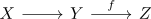
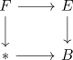

homotopy fibration sequence
Definition
A sequence in category Top

together with a basepoint $z \in Z$ and a continuous map
\begin{align*}
g: X \rightarrow \mathrm{hofib}_z(f)
\end{align*}
is said to be a homotopy fibration sequence, if $g$ is a weak homotopy equivalence
Definition
A homotopy fibration sequence is a homotopy pullback
